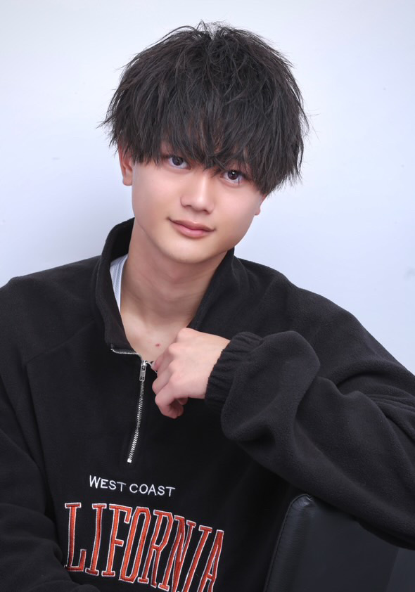

木下 和磨
経歴
| 2022年4月 | 味ん味ん に入社(アルバイト) |
| 2022年4月 | 日野高校 に入学 |
| 2024年8月 | ハッカソン in Microsoft社 に参加 |
| 2025年2月 | ITパスポート を取得 |
| 2025年3月 | 日野高校 を卒業 |
| 2025年4月 | 立川情報ITクリエイター専門学校 入学 |
趣味・特技
好きな歌手
飼い猫


| 2022年4月 | 味ん味ん に入社(アルバイト) |
| 2022年4月 | 日野高校 に入学 |
| 2024年8月 | ハッカソン in Microsoft社 に参加 |
| 2025年2月 | ITパスポート を取得 |
| 2025年3月 | 日野高校 を卒業 |
| 2025年4月 | 立川情報ITクリエイター専門学校 入学 |